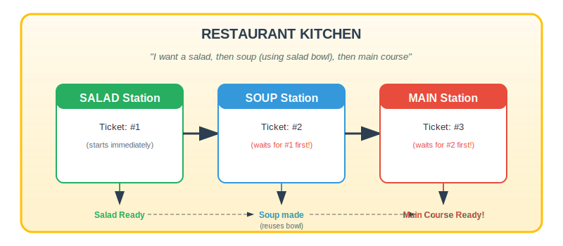
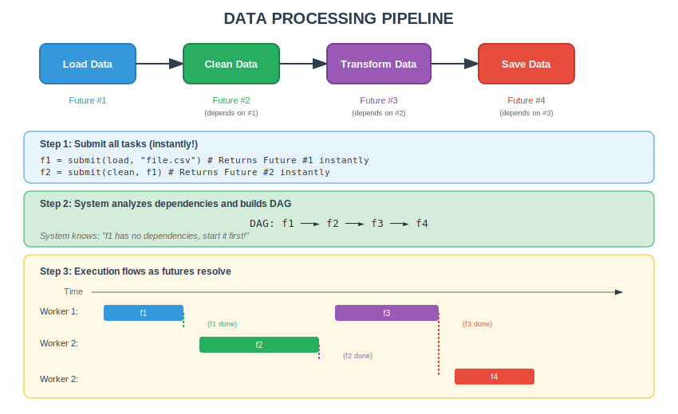
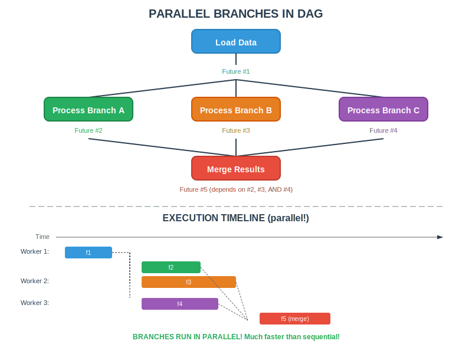
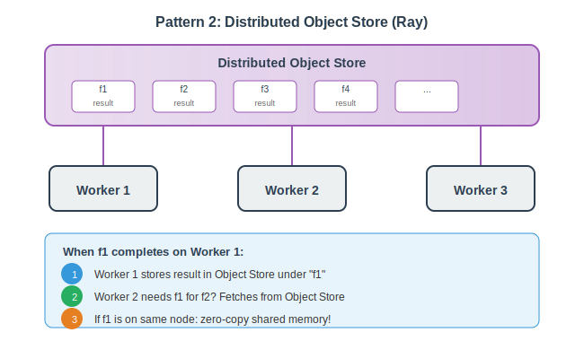
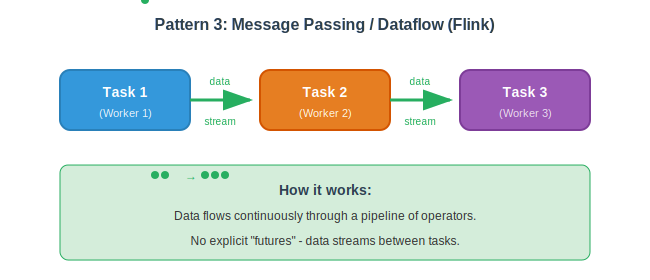
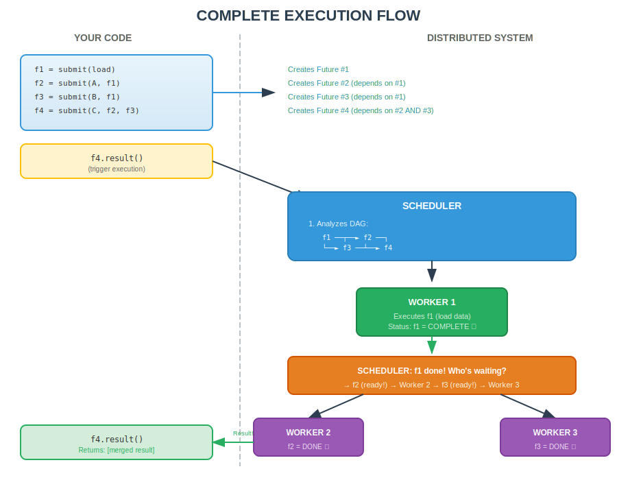

Learning Objectives
By the end of this session, students will be able to:
- Understand the Future/Promise pattern used in distributed computing
- Explain the difference between synchronous and asynchronous execution
- Define what a DAG is and why it matters
- Describe how task dependencies flow through a distributed system
- Compare different worker communication patterns
- Apply these concepts to understand how AI frameworks process data
Introduction: How Distributed Tools Handle Parallel Processing
When you need to process massive amounts of data—whether training an AI model or analyzing billions of records—you can't wait for each operation to complete before starting the next one. Instead, modern distributed systems use a clever "ticket" system that lets you submit work and continue doing other things while that work is being processed.
1. The Restaurant Analogy
Imagine you walk into a busy coffee shop or restaurant. There are two ways the ordering process could work:
The Synchronous (Blocking) Way — Inefficient!
You: "I'd like a latte please"
You: *stand at counter*
You: *wait*
You: *keep waiting*
You: *still waiting... 5 minutes pass*
Barista: "Here's your latte!"
You: *NOW you can go sit down or do anything else*Problem: This is synchronous/blocking execution — you submit a request and wait idle until it completes. You can't do anything else during this time. Very inefficient!
The Asynchronous (Non-Blocking) Way — Efficient!
You: "I'd like a latte please"
Barista: "Sure! Here's your ticket: #42"
You: *take ticket, go sit down, read a book, check emails, chat with friend*
You: *occasionally check the screen or listen for your number*
Screen: "Now serving #42!"
You: *go collect your latte*2. Understanding Futures/Promises: The Ticket System
Definition: A Future (also called a Promise) is a placeholder for a result that will be available later. It's like a ticket that you can use to retrieve your result when it's ready.
That ticket (#42) is exactly what programming languages and distributed tools call a Future or Promise:
| Restaurant | Programming |
|---|---|
| Your order (latte) | A computation/task |
| The kitchen/barista | A worker/executor |
| The ticket (#42) | A Future/Promise object |
| Checking if order ready | Checking Future status (.done(), .ready()) |
| Picking up your order | Getting the result (.result(), .get()) |
| Order failed (out of milk!) | Future raises an exception |
Why This Pattern Matters for Distributed Computing
In distributed systems, we often need to:
- Submit many tasks to different workers (machines/cores/GPUs)
- Not wait for each task to finish before submitting the next
- Collect results when they're ready
- Handle failures gracefully
Single Task Example
# SYNCHRONOUS (blocking) - inefficient
result = slow_computation(data) # Wait here for 10 minutes...
print(result) # Can only continue after it's done
# ASYNCHRONOUS (non-blocking) - efficient
future = submit(slow_computation, data) # Returns immediately with a "ticket"
# ... do other work while computation runs ...
result = future.result() # Get result when neededMultiple Tasks Example
# Submit 1000 tasks - returns 1000 "tickets" immediately
futures = [submit(process, chunk) for chunk in data_chunks]
# All 1000 tasks are now running in parallel on different workers!
# We didn't wait for task 1 to finish before submitting task 2
# Collect results when ready
results = [f.result() for f in futures]3. How Different Tools Implement This Pattern
Almost every distributed tool uses some form of this Future/Promise pattern:
| Tool | Future/Promise Implementation |
|---|---|
| Python (built-in) | concurrent.futures.Future |
| Dask | dask.delayed returns delayed objects; .compute() triggers execution |
| Ray | @ray.remote functions return ObjectRef (Ray's future) |
| Spark | RDDs/DataFrames are lazy; transformations return new RDDs; actions trigger execution |
| Parsl | @python_app functions return AppFuture |
| Flink | DataStream operations are lazy; execution triggered by env.execute() |
| TensorFlow | (Graph mode) Operations return tensor references; session.run() executes |
| PyTorch | torch.jit.fork() returns Future for async execution |
| Airflow/Prefect | Tasks return results that downstream tasks await |
4. Lazy Evaluation: The Kitchen Doesn't Start Until You Order
Definition: Lazy evaluation means the system doesn't actually do any work until you explicitly ask for results. It builds a "plan" first, then executes it all at once.
Many tools use lazy evaluation — they don't actually do any work until you explicitly ask for results:
# Dask example - NOTHING is computed yet!
df = dd.read_csv("huge_file.csv") # Lazy - just a plan
filtered = df[df['value'] > 100] # Lazy - adds to plan
grouped = filtered.groupby('category') # Lazy - adds to plan
result = grouped.sum() # Lazy - still just a plan!
# NOW it actually executes the entire plan
final = result.compute() # Triggers execution!Restaurant Analogy
It's like telling the waiter your entire order (appetizer, main course, dessert), and the kitchen only starts cooking when you say "That's everything, please start!"
This allows the system to optimize the entire plan before executing — maybe combining steps, reordering operations, or eliminating unnecessary work.
5. Key Terminology Summary
| Term | Meaning | Restaurant Analogy |
|---|---|---|
| Synchronous | Wait for each task to complete before continuing | Stand at counter until order ready |
| Asynchronous | Submit task, get ticket, continue with other work | Get ticket, go sit down |
| Future/Promise | A placeholder for a result that will be available later | Your ticket #42 |
| Blocking | Operation that stops execution until complete | Waiting at counter |
| Non-blocking | Operation that returns immediately | Getting ticket and walking away |
| Lazy Evaluation | Build a plan of work, execute later | Give full order, kitchen starts on command |
| Eager Evaluation | Execute immediately when called | Kitchen starts each item as you order it |
| Callback | Function called when future completes | "We'll call your name when ready!" |
| await/wait | Block until future completes | Sit and wait for your number |
| poll/check | Check if future is ready without blocking | Glance at the screen occasionally |
6. What is a DAG? (Directed Acyclic Graph)
Definition: A DAG (Directed Acyclic Graph) is a way to represent tasks and their dependencies. It shows which tasks must complete before others can start.
- Directed: Arrows show data flow direction (A → B means A's output goes to B)
- Acyclic: No loops/cycles (you can't have A depend on B and B depend on A)
- Graph: Nodes (tasks) connected by edges (dependencies)
The Chain of Promises: Multi-Course Meal
Imagine a more complex restaurant scenario — you're ordering a multi-course meal where each course depends on the previous one:
7. Task Dependencies: How Futures Flow Through the DAG
In real-world data processing, tasks rarely work in isolation. The output of one task becomes the input to another. This creates dependencies.
Dependencies in Code
# Task B depends on Task A's result
# Task C depends on Task B's result
future_A = submit(task_A, raw_data) # Returns immediately with ticket A
future_B = submit(task_B, future_A) # Takes ticket A as input!
future_C = submit(task_C, future_B) # Takes ticket B as input!
# The system knows:
# - task_A can start immediately
# - task_B must WAIT for future_A to be ready
# - task_C must WAIT for future_B to be ready
final_result = future_C.result() # Blocks until entire chain completesNotice: We pass the future itself (the ticket), not the result! The system automatically waits for dependencies.
Data Processing Pipeline with DAG Flow
Parallel Branches: Where DAGs Shine
The real power comes when tasks can run in parallel because they don't depend on each other:
Building a DAG with Dependencies (Code Example)
# Using Dask as example (similar pattern in Ray, Parsl, Spark)
from dask import delayed
@delayed
def load(filename):
return read_file(filename)
@delayed
def process_a(data):
return data.filter(...)
@delayed
def process_b(data):
return data.transform(...)
@delayed
def process_c(data):
return data.aggregate(...)
@delayed
def merge(a, b, c):
return combine(a, b, c)
# Build the DAG (no execution yet!)
data = load("input.csv") # Future #1
branch_a = process_a(data) # Future #2, depends on #1
branch_b = process_b(data) # Future #3, depends on #1
branch_c = process_c(data) # Future #4, depends on #1
final = merge(branch_a, branch_b, branch_c) # Future #5, depends on #2,#3,#4
# Visualize the DAG (Dask feature)
final.visualize() # Shows the graph!
# Execute the DAG
result = final.compute() # NOW all tasks run, respecting dependencies8. Worker Communication Patterns
When a future completes, how does the next task get the result? Different tools use different approaches:
Pattern 1: Centralized Scheduler (Dask, Spark)

Pattern 2: Distributed Object Store (Ray)
Pattern 3: Message Passing / Dataflow (Flink)
The Complete Picture: From Submission to Result
9. Quick Code Examples by Tool
Dask
import dask
@dask.delayed # Makes function lazy
def process(x):
return x * 2
futures = [process(i) for i in range(100)] # 100 delayed objects (tickets)
results = dask.compute(*futures) # Execute all in parallelRay
import ray
@ray.remote # Makes function distributed
def process(x):
return x * 2
futures = [process.remote(i) for i in range(100)] # 100 ObjectRefs (tickets)
results = ray.get(futures) # Collect resultsParsl
from parsl import python_app
@python_app # Makes function parallel
def process(x):
return x * 2
futures = [process(i) for i in range(100)] # 100 AppFutures (tickets)
results = [f.result() for f in futures] # Collect resultsSpark (Lazy Transformations)
rdd = sc.parallelize(range(100)) # Distributed collection
mapped = rdd.map(lambda x: x * 2) # Lazy transformation (plan)
result = mapped.collect() # Action triggers executionTools and Their DAG Implementations
| Tool | DAG Construction | Visualization | Execution Trigger |
|---|---|---|---|
| Dask | @delayed decorator |
.visualize() |
.compute() |
| Ray | @ray.remote decorator |
Ray Dashboard | ray.get() |
| Spark | Transformations on RDD/DF | Spark UI (DAG tab) | Actions (collect, save) |
| Parsl | @python_app decorator |
Parsl monitoring | .result() |
| Airflow | Task dependencies in DAG file | Airflow Web UI | Scheduler triggers |
| Prefect | @task and @flow decorators |
Prefect UI | .run() or schedule |
| Flink | DataStream operations | Flink Web UI | env.execute() |
| Beam | PTransform chains | Pipeline visualization | pipeline.run() |
Summary: Key Takeaways
| Concept | Explanation |
|---|---|
| Future/Promise | A placeholder (ticket) for a result that will be available later |
| DAG | A graph showing tasks (nodes) and their dependencies (edges) |
| Root tasks | Tasks with no dependencies — can start immediately |
| Leaf tasks | Tasks with no dependents — final outputs |
| Dependency resolution | Scheduler tracks which futures each task needs |
| Parallel branches | Independent tasks run simultaneously on different workers |
| Join/Merge points | Tasks that wait for multiple futures before starting |
| Data locality | Scheduler tries to run tasks near their input data |
| Lazy construction | DAG is built instantly; execution happens later |
Connection to AI/ML
These patterns are fundamental to how modern AI systems work:
- Training deep learning models distributes computation across GPUs using these patterns
- Data preprocessing pipelines use DAGs to organize transformation steps
- Feature engineering often involves parallel computation of many features
- Model inference at scale uses async patterns to handle many requests
Additional Resources
Want to dive deeper into specific distributed computing tools? Check out our comprehensive technical reference:
The reference covers: Computing paradigms, language support, processing modes, device support (GPU/TPU), cloud capabilities, architecture patterns, data partitioning strategies, fault tolerance mechanisms, and tool selection guides.